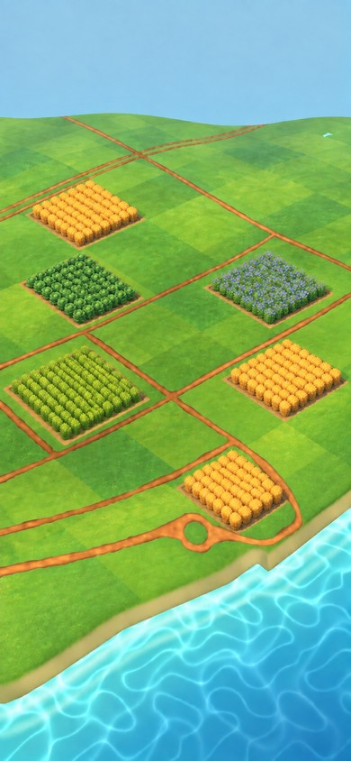
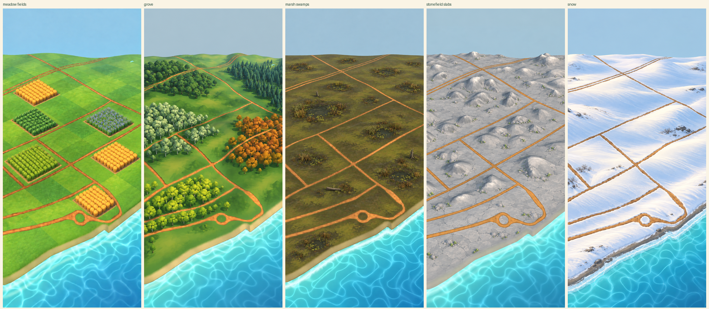
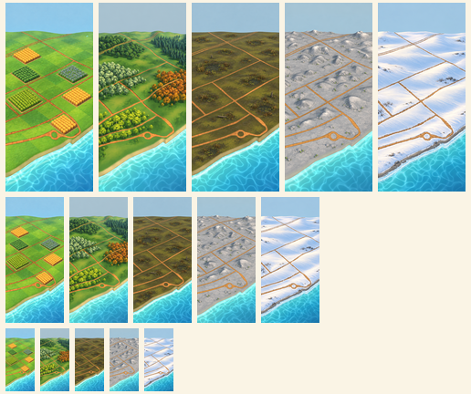
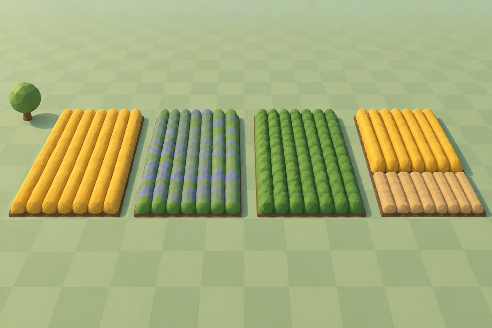
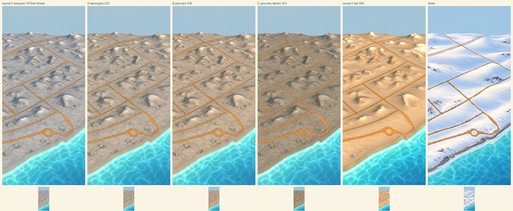
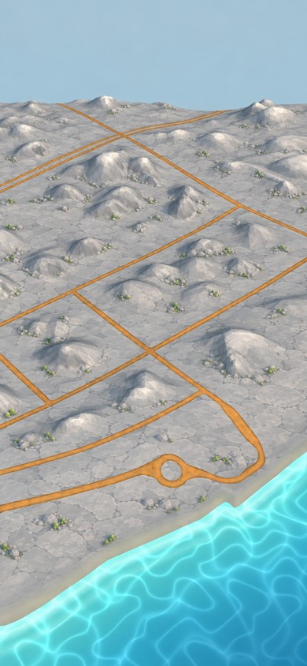
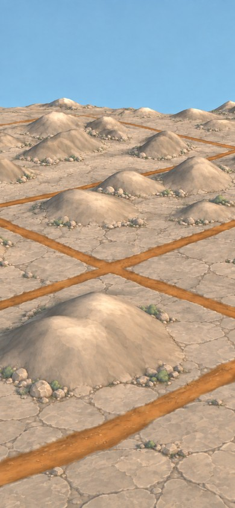
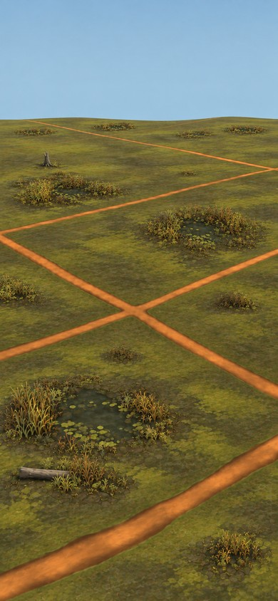
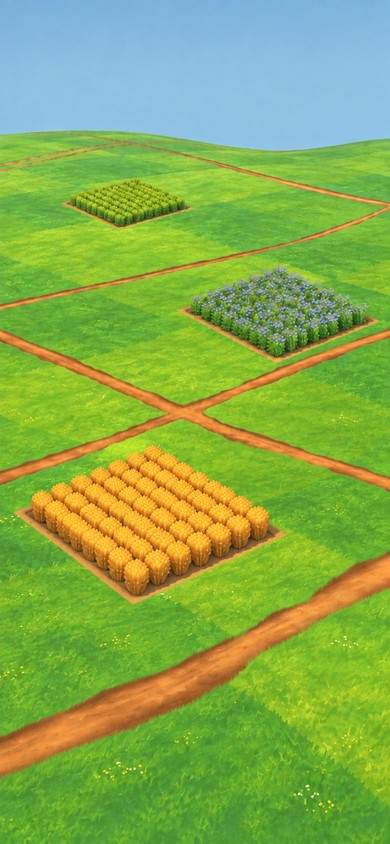

Concepts. The third review of 2026-09-25 asked for the Marsh's indents to become irregular swamps distinct from water, for Stonefield to take the grey cracked-slab look of the older mockups, and for Meadow's crops to appear as square-cornered fields of a chunky crop asset on the chosen green checker. Grove stays as in round two. Same cameras and geography as round two. Map imagery © Mapbox © OpenStreetMap.
Meadow with fields, Grove (round two), Marsh swamps, Stonefield slabs, Snow (round two).


| pair | distance |
|---|---|
| meadow fields vs grove | 19.3 |
| meadow fields vs marsh swamps | 46.1 |
| meadow fields vs stonefield slabs | 60.8 |
| meadow fields vs snow | 66.3 |
| grove vs marsh swamps | 27.9 |
| grove vs stonefield slabs | 48.2 |
| grove vs snow | 58.4 |
| marsh swamps vs stonefield slabs | 39.3 |
| marsh swamps vs snow | 55.6 |
| stonefield slabs vs snow | 18.9 |
The chosen green checker with square-cornered farmland fields of chunky crop rows: ripe wheat, young wheat, flax with blue flowers, a leafy crop.

A proposed 3D field-block asset: one chunky low-poly mass of rows per field, square corners, a dirt margin; wheat, flax, leafy crop, and a half-harvested state; a pack tree for scale.

Flat dark lowland with irregular reedy swamp patches: dark opaque pools with lily pads and reeds, never blue, never the sea's look. Replaces round two's bowls, which read as craters.


Stonefield was reading too much like Snow. The request: use round three's grey slabs in round two's tan, or a grey-tan in between, so that its grey becomes a warm tone rather than a cool one. Left to right: round three's cool grey, A warm grey, B grey-tan, C grey-tan a step darker, round two's tan, and Snow; the number is the mean ground colour's distance from Snow in Lab units (30 reads as a different family).

The grey cracked-slab ground and boulders of the older mockups, on the game's actual rocky mounds; pale tops kept subtle.


Painted from each chosen default-zoom mockup as the style master, at the game's fully zoomed-in camera. These are the near-camera pixel targets.


